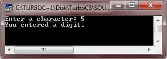
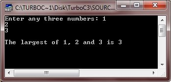
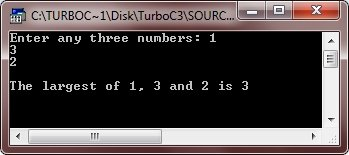
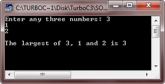
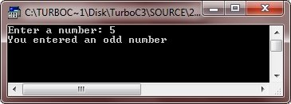
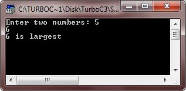
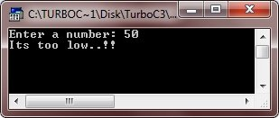
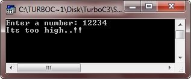
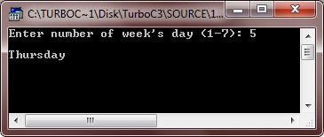
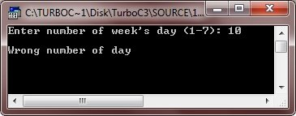

if, nested ifs, if-else, if-else-if and switch statement
Source: codescracker
The selection (if, if-else, if-else-if, and switch) statements allows to choose the
set-of-instructions for execution depending upon an expression's truth value. C++
provides following two types of selection statements:
• if statement
• switch statement
In addition, in certain circumstances ? operator can be used as an alternative to if
statement. The selection statements are also called conditional statements or decision
statements (as already discussed in the previous tutorial). We will learn about
selection statements of C++ in detail, divided into these parts:
• if statement
• if-else statement
• nested ifs statement
• switch statement
• nested switch statement
C++ if Statement
An if statement tests a particular condition; if the condition evaluates to true, a course-of-action is followed i.e., a statement or set-of-statements is executed. Otherwise (if the condition evaluates to false), the course-of-action is ignored. Here is the syntax or general form of the if statement:
Here, statement may be a single statement or a block of statements, or nothing (in case of empty statement). The expression must be enclosed in parentheses. If the expression evaluates to true i.e., a nonzero value, the statement is executed, otherwise ignored. For example, the following code fragment :
Checks whether the character variable ch stores a space or not; if it does, the number of spaces are incremented by 1. Consider another example illustrating the use of if statement :
The above example reads a character. If the character input is a space, if flashes a message specifying it. If the character input is a digit, it flashes a message specifying it. Let's take an example demonstrating the if statement of C++ practically.
Here is the sample run of the above C++ program:
Let's take another example, also demonstrating the if statement of C++
Here is the sample run of this C++ program:

Following example programs also illustrates the syntax and working of the if statement :
When the above C++ program is compile and executed, it will produce the following output. This is the output, if 3rd number is biggest.
Here is another output, if 2nd number is biggest.
Now, here is the last output, if 1st number is biggest:
C++ if-else Statement
The examples of if statement, you have seen so far allow you to execute a set of
statements if a condition or expression evaluates to true. What if there is another
course of action to be followed if the expression evaluates to false ?
There is another form of if that allows for this kind of either-or condition by
providing an else clause. The syntax of the if-else statement is the following :
If the expression evaluates to true i.e., a nonzero value, the statement 1 is executed, otherwise, statement 2 is executed. The statement 1 and statement 2 can be a single statement, or a compound statement, or a null statement.
Note - Remember, in an if-else statement, only the code associated with if (i.e.,
statement 1) or the code associated with else (i.e., statement 2) executes, never
both.
Let's take an example program, demonstrating the if-else statement of C++, practically.
Below are the two sample run of the above C++ program:


Here is another program, also illustrating the use of if-else statement in a C++ program:
When the above C++ program is compile and executed, it will produce the following output:
Important - Placement of semicolon is also important. In an if statement, DO NOT put semicolon in the line having test condition, such as
Caution - If you put a semicolon after the test condition, the if statement ends there. The block or statements following are no more part of if in such cases. Now, let's discuss nested ifs statement in C++.
C++ nested ifs Statement
A nested if is an if that has another if in its if's body or in its else's body. The nested if can have one of the following three forms. Here is the first form:
This is the second form of nested ifs statement:
Now, this is the third form of nested ifs statement:
In an if statement, either there can be if statement(s) in its body-of-if or in its body-of-else or in both. The inner ifs can themselves be nested ifs, but the inner if must terminate before an outer if. Following example programs illustrates the use of nested ifs
Here are the sample runs of the above C++ program:

C++ switch Statement
C++ provides a multiple-branch selection statement known as switch. This selection statement successively tests the value of an expression against a list of integer or character constants. When a match is found, the statements associated with that constant are executed. The syntax of switch statement is as follows:
The expression is evaluated and its values are matched against the values of the
constants specified in the case statements. When a match is found, the statement
sequence associated with that case is executed until the break statement or the end of
switch statement is reached. If a case statement does not include a break statement,
then the control continues right on the next case statement(s) until either a break is
encountered or end of switch is reached. This situation (i.e., missing break in case
statement) is called fall through. The default statement gets executed when no match is
found. The default statement is optional and, if it is missing , no action takes place
if all matches fail.
The ANSI standard specifies that a switch can have upto 257 case statements, however,
you must always limit the number of case statements to a smaller amount for the sake of
efficiency.
Following example illustrates the use of switch statement. This program ask to the user
to input number of week's day (1-7) and translate to its equivalent name of the day of
the week (e.g., 1 to Sunday, 2 to Monday, ...., 7 to Saturday).
When the above program is compile and executed, it will produce the following output:

switch Vs if-else
The switch and if-else both are selection statements and they both let you select an alternative out of given many alternatives by testing an expression. However, there are some differences in their operations. These are given below:
• The switch statement differs from the if statement in that switch can only test for
equality whereas if can evaluate a relational or logical expression i.e., multiple
conditions.
• The switch statement selects its branches by testing the value of same variable
(against a set of constants) whereas the if-else construction lets you use a series of
expressions that may involve unrelated variables and complex expressions.
• The if-else is more versatile of the two statements. For example, if-else can handle
ranges whereas switch cannot. Each switch case label must be a single value.
• The if-else statement can handle floating-point tests also apart from handling integer
and character tests whereas a switch cannot handle floating-point tests. The case labels
of switch must be an integer (which includes char also).
• The switch case label value must be a constant. So, if two or more variables are to be
compared, use if-else.
• The switch statement is more efficient choice in terms of code used in a situation
that supports the nature of switch operation (testing a value against a set of
constants).
C++ Nested-Switch
Like if statements, a switch can also be nested. There can be a switch as part of the statement sequence of another switch. For example, the following code fragment is perfectly all right in C++
Some important Things to know about switch
There are some important things that you must know about the switch statement :
• A switch statement can only work for equality comparisons.
• TNo two case labels in the same switch can have identical values. But, in case of
nested switch statements the case constants of the inner and outer switch can contains
common values.
• If character constants are used in the switch statement, they are automatically
converted to their integers (i.e., their equivalent ASCII codes).
• The switch statement is more efficient than if in a situation that supports the nature
of switch operation.
Tip - A switch statement is more efficient than nested if-else statement.
Tip - Always put a break statement after the last case statement in a switch.